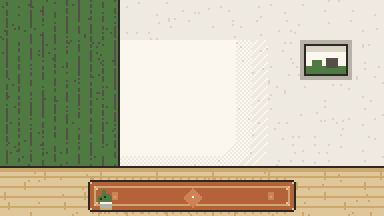

The Study Room
Welcome. This room keeps things you already saved, and hands a few back to you when you visit. Everything stays on your computer.
Group your photos into an album?
A first look through your things
These are some of the oldest things you saved, one at a time. You decide what the room may hand back to you.
the librarian recommends a sitting at the candle first: it looks through what's new with you before you bless.
Your shelf
a few things you chose to meet again. open one, or just look.
Your library
The Study Room
a room of your own

Your photos
Before the librarian reads anything
Kept private